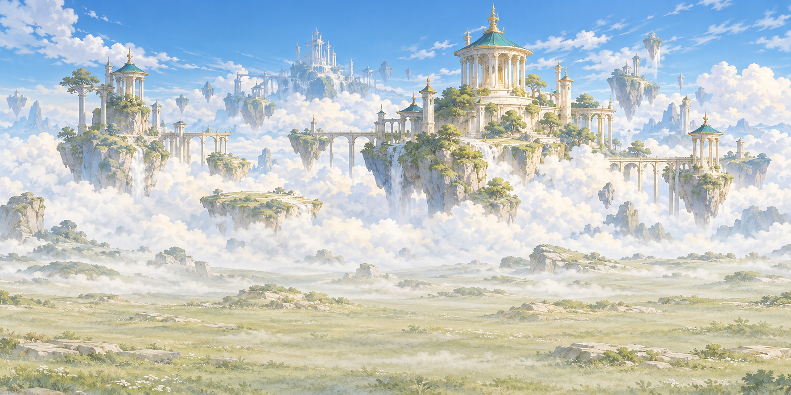
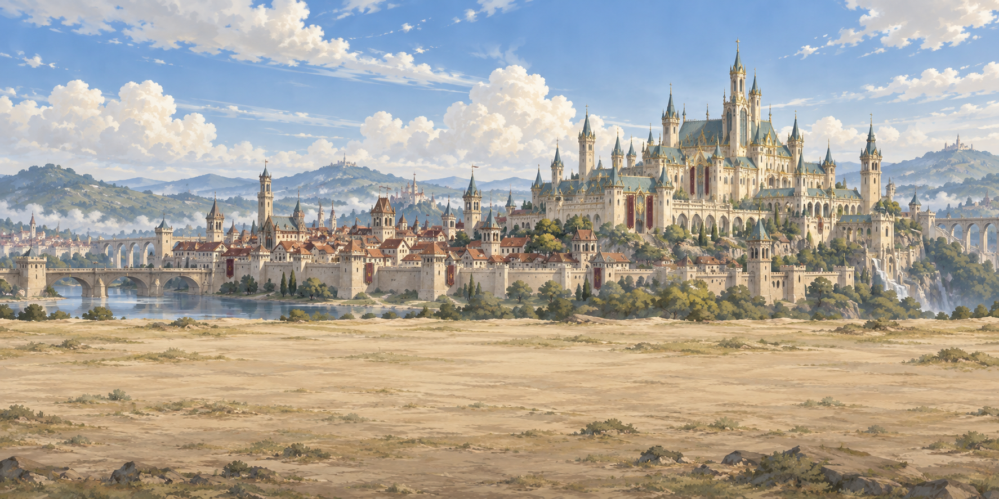
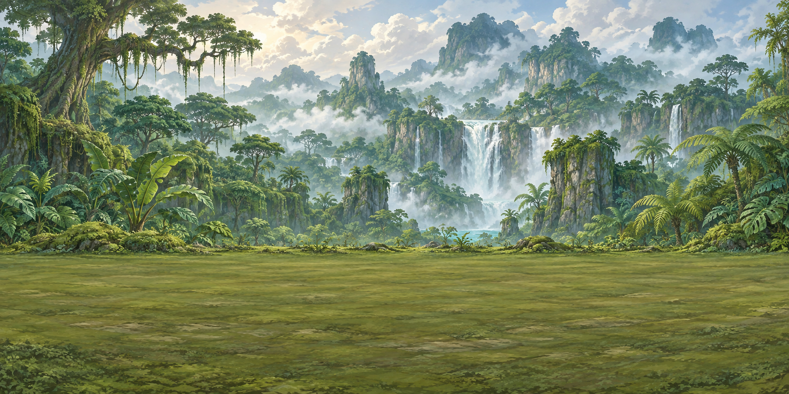
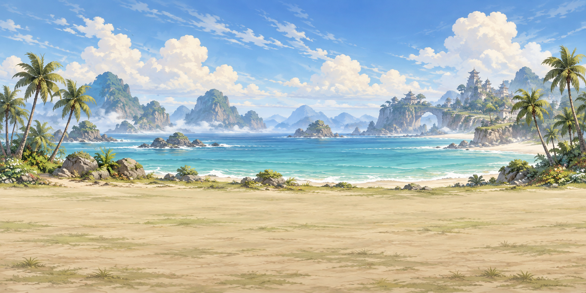
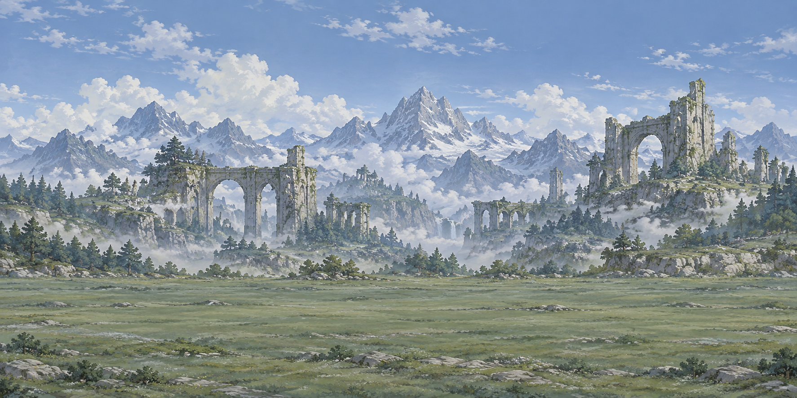
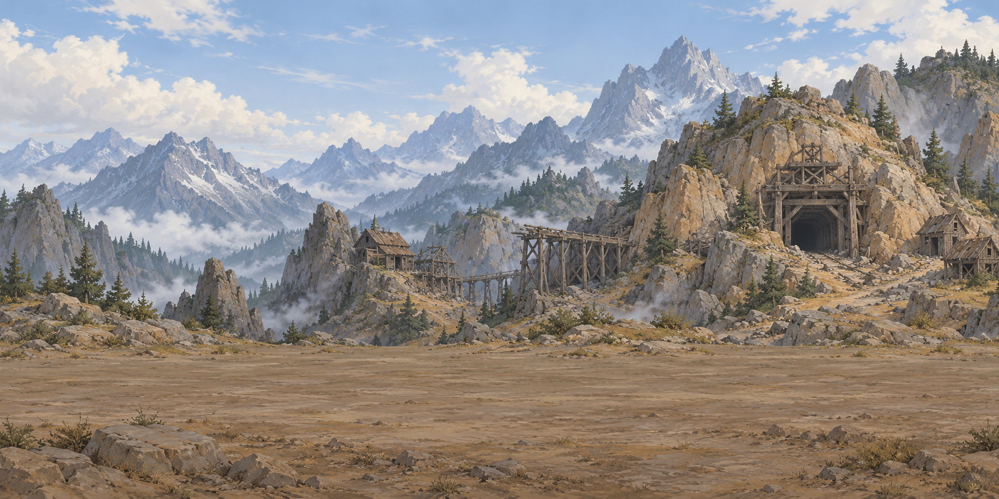

WING & WIND / VENUE ART
レース試走へ六つの舞台を、駆ける。
横スクロールのレース背景 · 柵・走路・チョコボは別に描画

王宮都市
ダート · 右回りレースで見る →
熱帯密林
芝 · 右回りレースで見る →
砂浜公園
ダート · 左回りレースで見る →
秘境遺跡
芝 · 左回りレースで見る →
横スクロールのレース背景 · 柵・走路・チョコボは別に描画





